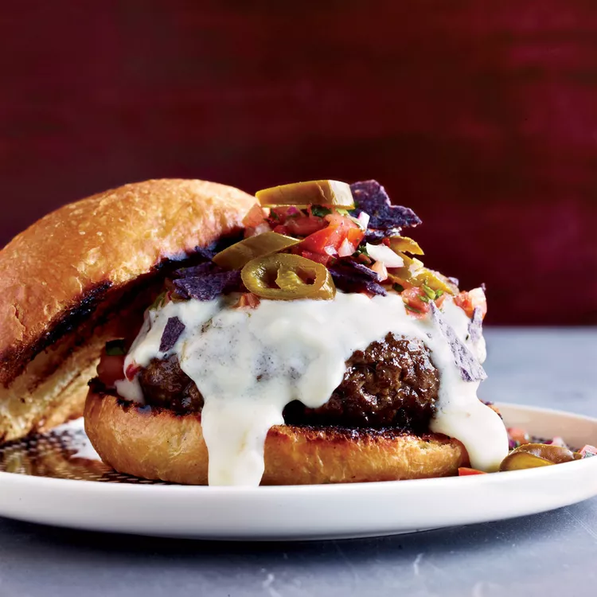
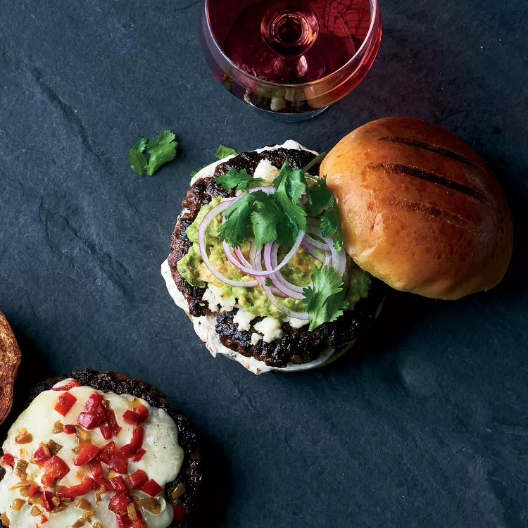

𝐁𝐮𝐫𝐠𝐞𝐫
𝐀 𝐛𝐮𝐫𝐠𝐞𝐫 𝐞𝐠𝐲 𝐢𝐳𝐥𝐞𝐭𝐞𝐬 𝐳𝐬𝐞𝐦𝐥𝐞 𝐤𝐨𝐳𝐞 𝐫𝐞𝐣𝐭𝐞𝐭𝐭 𝐡𝐮𝐬𝐩𝐨𝐠𝐚𝐜𝐬𝐚, 𝐬𝐚𝐣𝐭 𝐞𝐬 𝐯𝐚𝐥𝐭𝐨𝐳𝐚𝐭𝐨𝐬 𝐟𝐞𝐥𝐭𝐞𝐭𝐞𝐤 𝐤𝐨𝐦𝐛𝐢𝐧𝐚𝐜𝐢𝐨𝐣𝐚, 𝐚𝐦𝐞𝐥𝐲 𝐚 𝐠𝐲𝐨𝐫𝐬 𝐞𝐭𝐤𝐞𝐳𝐞𝐬𝐞𝐤 𝐞𝐠𝐲𝐢𝐤 𝐥𝐞𝐠𝐧𝐞𝐩𝐬𝐳𝐞𝐫𝐮𝐛𝐛 𝐯𝐚𝐥𝐚𝐬𝐳𝐭𝐚𝐬𝐚 𝐚 𝐯𝐢𝐥𝐚𝐠 𝐬𝐳𝐚𝐦𝐨𝐬 𝐨𝐫𝐬𝐳𝐚𝐠𝐚𝐛𝐚𝐧.
𝐇𝐨𝐳𝐳𝐚𝐯𝐚𝐥𝐨𝐤:
- ❝𝐃𝐚𝐫𝐚𝐥𝐭 𝐦𝐚𝐫𝐡𝐚𝐡𝐮𝐬❞
- ❝𝐇𝐚𝐦𝐛𝐮𝐫𝐠𝐞𝐫𝐳𝐬𝐞𝐦𝐥𝐞❞
- ❝𝐒𝐚𝐣𝐭❞
- ❝𝐓𝐞𝐭𝐬𝐳𝐞𝐬 𝐬𝐳𝐞𝐫𝐢𝐧𝐭𝐢 𝐳𝐨𝐥𝐝𝐬𝐞𝐠𝐞𝐤❞
- ❝𝐓𝐞𝐭𝐬𝐳𝐞𝐬 𝐬𝐳𝐞𝐫𝐢𝐧𝐭𝐢 𝐬𝐳𝐨𝐬𝐳𝐨𝐤❞
- ❝𝐒𝐨❞
- ❝𝐁𝐨𝐫𝐬❞
𝐊𝐮𝐥𝐨𝐧𝐥𝐞𝐠𝐞𝐬 𝐢𝐳𝐞𝐤:
❝𝐂𝐚𝐩𝐫𝐞𝐬𝐞 𝐁𝐮𝐫𝐠𝐞𝐫❞

𝐀 𝐂𝐚𝐩𝐫𝐞𝐬𝐞 𝐛𝐮𝐫𝐠𝐞𝐫 𝐞𝐠𝐲 𝐟𝐫𝐢𝐬𝐬, 𝐦𝐞𝐝𝐢𝐭𝐞𝐫𝐫𝐚𝐧 𝐢𝐡𝐥𝐞𝐭𝐞𝐬𝐮 𝐞𝐭𝐞𝐥, 𝐚𝐦𝐞𝐥𝐲 𝐬𝐚𝐟𝐭𝐨𝐬 𝐡𝐮𝐬𝐩𝐨𝐠𝐚𝐜𝐬𝐚𝐭, 𝐞𝐫𝐞𝐭𝐭 𝐦𝐨𝐳𝐳𝐚𝐫𝐞𝐥𝐥𝐚 𝐬𝐚𝐣𝐭𝐨𝐭, 𝐟𝐫𝐢𝐬𝐬 𝐛𝐚𝐳𝐬𝐚𝐥𝐢𝐤𝐨𝐦𝐨𝐭 𝐞𝐬 𝐢𝐳𝐥𝐞𝐭𝐞𝐬 𝐩𝐚𝐫𝐚𝐝𝐢𝐜𝐬𝐨𝐦𝐬𝐳𝐞𝐥𝐞𝐭𝐞𝐤𝐞𝐭 𝐤𝐨𝐦𝐛𝐢𝐧á𝐥, 𝐢𝐠𝐲 𝐛𝐢𝐳𝐭𝐨𝐬í𝐭𝐯𝐚 𝐚𝐳 𝐢𝐳𝐞𝐤 𝐡𝐚𝐫𝐦𝐨𝐧𝐢𝐤𝐮𝐬 𝐞𝐥𝐞𝐠𝐲𝐞𝐭.
❝𝐍𝐚𝐜𝐡𝐨 𝐁𝐮𝐫𝐠𝐞𝐫❞
𝐀 𝐧𝐚𝐜𝐡𝐨 𝐛𝐮𝐫𝐠𝐞𝐫 𝐞𝐠𝐲 𝐢𝐳𝐠𝐚𝐥𝐦𝐚𝐬 𝐤𝐨𝐦𝐛𝐢𝐧𝐚𝐜𝐢𝐨, 𝐚𝐦𝐞𝐥𝐲 𝐬𝐚𝐟𝐭𝐨𝐬 𝐡𝐮𝐬𝐩𝐨𝐠𝐚𝐜𝐬𝐚𝐭, 𝐨𝐥𝐯𝐚𝐝𝐭 𝐬𝐚𝐣𝐭𝐨𝐭, 𝐭𝐨𝐫𝐭𝐢𝐥𝐥𝐚 𝐜𝐡𝐢𝐩𝐬𝐞𝐭 𝐞𝐬 𝐣𝐚𝐥𝐚𝐩𝐞ñ𝐨𝐭 𝐫𝐞𝐣𝐭, 𝐢𝐠𝐲 𝐡𝐨𝐳𝐯𝐚 𝐞𝐥 𝐚 𝐦𝐞𝐱𝐢𝐤𝐨𝐢 𝐢𝐳𝐞𝐤 𝐤𝐢𝐬𝐞𝐫𝐞𝐭𝐞𝐭 𝐚 𝐤𝐥𝐚𝐬𝐬𝐳𝐢𝐤𝐮𝐬 𝐛𝐮𝐫𝐠𝐞𝐫𝐡𝐞𝐳.
❝𝐀𝐯𝐨𝐜𝐚𝐝𝐨 𝐁𝐮𝐫𝐠𝐞𝐫❞
𝐀𝐳 𝐚𝐯𝐨𝐜𝐚𝐝𝐨 𝐛𝐮𝐫𝐠𝐞𝐫 𝐞𝐠𝐲 𝐟𝐫𝐢𝐬𝐬 𝐞𝐬 𝐤𝐫𝐞𝐦𝐞𝐬 𝐢𝐳𝐞𝐥𝐦𝐞𝐧𝐲, 𝐚𝐦𝐞𝐥𝐲 𝐬𝐚𝐟𝐭𝐨𝐬 𝐡𝐮𝐬𝐩𝐨𝐠𝐚𝐜𝐬𝐚𝐭, 𝐞𝐫𝐞𝐭𝐭 𝐚𝐯𝐨𝐜𝐚𝐝𝐨-𝐭 𝐞𝐬 𝐯𝐚𝐥𝐭𝐨𝐳𝐚𝐭𝐨𝐬 𝐟𝐞𝐥𝐭𝐞𝐭𝐞𝐤𝐞𝐭 𝐤𝐨𝐦𝐛𝐢𝐧á𝐥, 𝐭𝐨𝐤𝐞𝐥𝐞𝐭𝐞𝐬 𝐯𝐚𝐥𝐚𝐬𝐳𝐭𝐚𝐬 𝐚𝐳 𝐞𝐠𝐞𝐬𝐳𝐬𝐞𝐠𝐞𝐬 𝐞𝐬 𝐢𝐳𝐥𝐞𝐭𝐞𝐬 𝐞𝐭𝐤𝐞𝐳𝐞𝐬𝐞𝐤𝐡𝐞𝐳.
𝐄𝐥𝐤𝐞𝐬𝐳𝐢𝐭𝐞𝐬:
𝐇𝐚𝐦𝐛𝐮𝐫𝐠𝐞𝐫 𝐞𝐥𝐤𝐞𝐬𝐳𝐢𝐭𝐞𝐬𝐞: 𝟓𝟎𝟎 𝐠 𝐝𝐚𝐫𝐚𝐥𝐭 𝐦𝐚𝐫𝐡𝐚𝐡𝐮𝐬𝐭 𝐟𝐮𝐬𝐳𝐞𝐫𝐞𝐳𝐳 𝐬𝐨𝐯𝐚𝐥 𝐞𝐬 𝐛𝐨𝐫𝐬𝐬𝐚𝐥, 𝐦𝐚𝐣𝐝 𝐟𝐨𝐫𝐦𝐚𝐳𝐳 𝐛𝐞𝐥𝐨𝐥𝐞 𝟒 𝐩𝐨𝐠𝐚𝐜𝐬𝐚𝐭. 𝐆𝐫𝐢𝐥𝐥𝐞𝐳𝐝 𝐯𝐚𝐠𝐲 𝐬𝐞𝐫𝐩𝐞𝐧𝐲𝐨𝐛𝐞𝐧 𝐬𝐮𝐭𝐞𝐬𝐝 𝟒-𝟓 𝐩𝐞𝐫𝐜𝐢𝐠 𝐦𝐢𝐧𝐝𝐤é𝐭 𝐨𝐥𝐝𝐚𝐥𝐨𝐧, 𝐦𝐚𝐣𝐝 𝐚𝐳 𝐮𝐭𝐨𝐥𝐬ó 𝐩𝐞𝐫𝐜𝐛𝐞𝐧 𝐭𝐞𝐠𝐲𝐞𝐥 𝐫𝐚 𝐬𝐚𝐣𝐭𝐬𝐳𝐞𝐥𝐞𝐭𝐞𝐤𝐞𝐭, 𝐡𝐨𝐠𝐲 𝐦𝐞𝐠𝐨𝐥𝐯𝐚𝐝𝐣𝐚𝐧𝐚𝐤. 𝐊𝐞𝐬𝐳𝐢𝐭𝐬𝐝 𝐞𝐥 𝐚 𝐳𝐬𝐞𝐦𝐥é𝐤𝐞𝐭, 𝐤𝐞𝐧𝐝 𝐦𝐞𝐠 𝐤𝐞𝐭𝐜𝐡𝐮𝐩𝐚𝐥, 𝐦𝐚𝐣𝐨𝐧𝐞𝐳𝐳𝐞𝐥 𝐞𝐬 𝐦𝐮𝐬𝐭𝐚𝐫𝐫𝐚𝐥, 𝐦𝐚𝐣𝐝 𝐡𝐞𝐥𝐲𝐞𝐳𝐝 𝐛𝐞𝐥𝐞 𝐚 𝐡𝐮𝐬𝐩𝐨𝐠𝐚𝐜𝐬𝐚𝐤𝐚𝐭, 𝐟𝐫𝐢𝐬𝐬 𝐬𝐚𝐥𝐚𝐭𝐚𝐭, 𝐩𝐚𝐫𝐚𝐝𝐢𝐜𝐬𝐨𝐦𝐨𝐭 𝐞𝐬 𝐡𝐚𝐠𝐲𝐦𝐚𝐭. 𝐓á𝐥𝐚𝐥𝐝 𝐦𝐞𝐥𝐞𝐠𝐞𝐧!